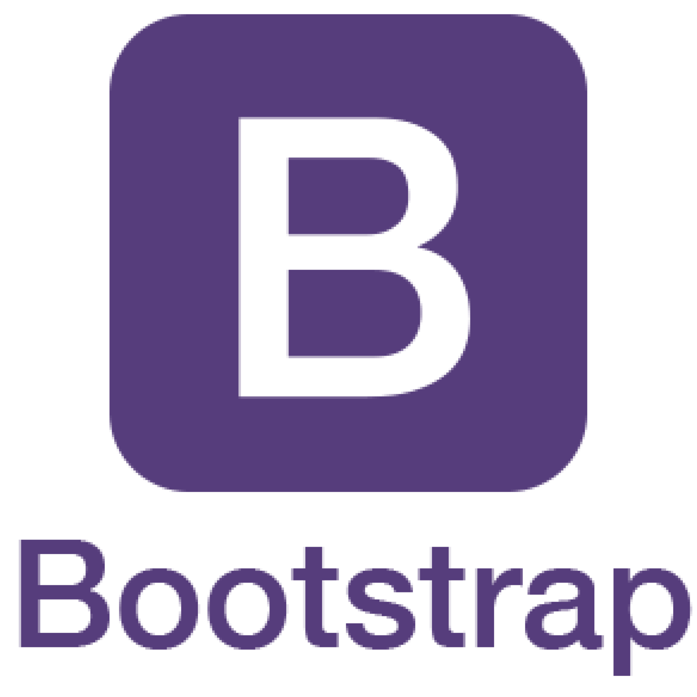
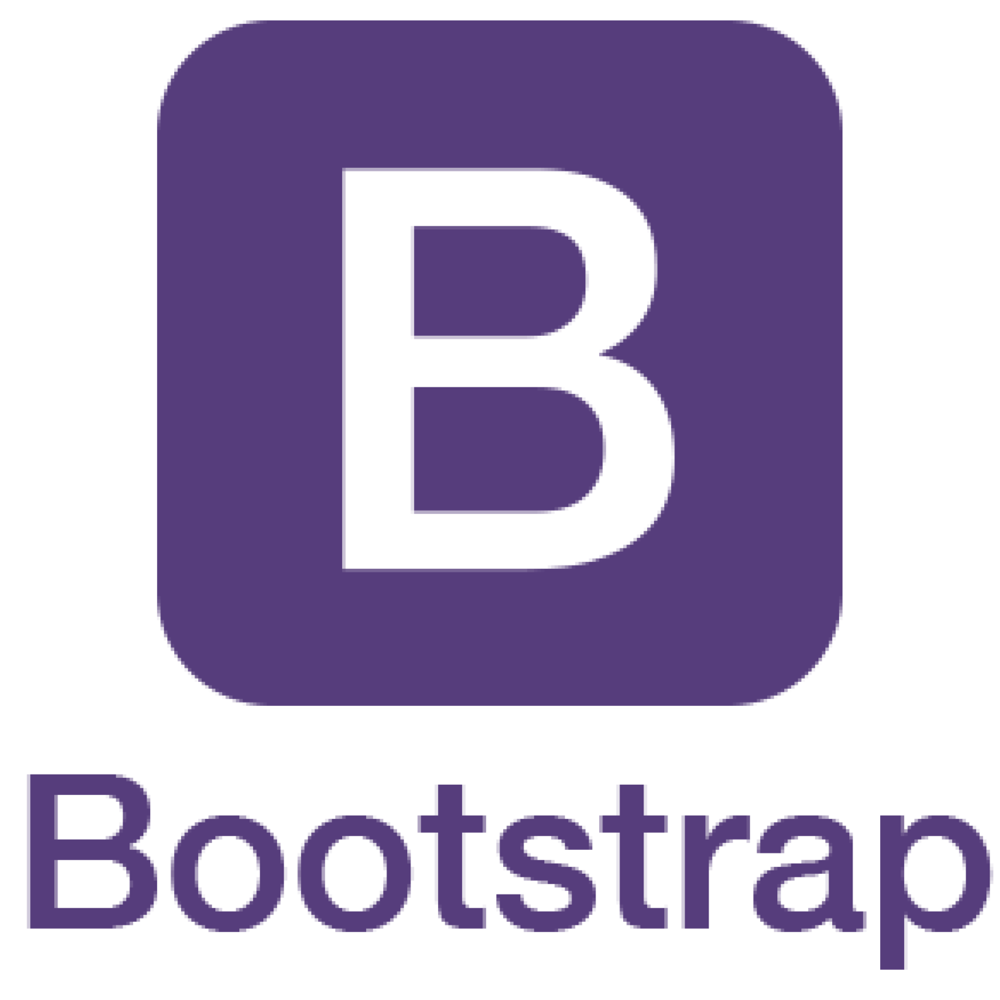

A mediados del 2020 me introduje en el desarrollo web a través de un curso de front end de Udemy. En la actualidad estoy realizando la carrera full stack de Coder House, y por lo pronto incorporando herramientas básicas.
Herramientas que voy complementando con mi noción del diseño y la estética, adquiridas en la secundaria (que tenía modalidad de diseño) y en la UBA.
Mi ingles de nivel First Certificate (sin examen) facilita mi curva de aprendizaje.
Estudio
Lenguajes / Herramientas


 


En proceso de aprendizaje


Otros estudios

Complete el CBC de la UBA para la carrera de diseño de imagen y sónido, estimulado por mis tendencias artísticas. Fui influenciado en ese aspecto por mi familia, ya que varios integrantes dedican gran parte de su tiempo a lo artístico. En primer año entendi que estaba muy orientada al cine y decidí tomar otro rumbo.
Buscando el camino me encontré cursando la carrera de tecnicatura y producción musical en la EMBA. La música es algo muy presente en mi vida, y sumado a mi facilidad para lo técnico y los números me pareció buena decisión probar ese camino. Sin embargo, en los inicios del segundo año comprendí que la musica pasaba más por un lado de hobby que profesional.


Realice los 2 años de la formación de Liderazgo y Coaching en la Escuela Latinoamericana de Coaching. Etapa en la que hubo mucho tiempo de introspección, de gestión de emociones y de trabajo en equipo. Mas que para formarme como profesional, fue una formación en busca de crecimiento personal que me dejo grandes aprendizajes